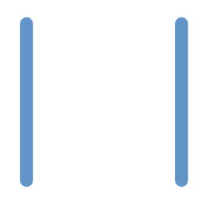
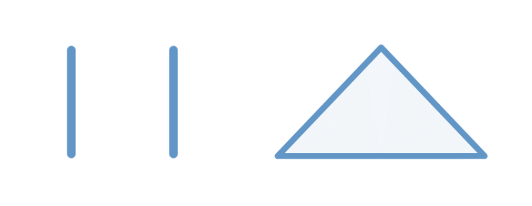

Tout d’abord, avant d’en apprendre plus sur l’API Canvas, il ne faut pas oublier les méthodes JavaScript que fournissent l’élément <canvas>.
En dehors des méthodes communes à tous les éléments HTML, les méthodes JS que le <canvas> possède sont au nombre de 4 :
L’API du <canvas> est récupérable en JavaScript grâce à la méthode getContext() de cet élément.
Comme dit précédemment, en fonction du paramètre type de cette méthode, nous pouvons récupérer plusieurs API différentes, par exemple avec le type « webgl », nous obtiendrons logiquement l’API WebGL pour dessiner sur le Canvas.
Néanmoins, celle qui nous intéresse sera juste l’API du type « 2d » qui permet simplement de dessiner des formes en 2d.
Voici en exemple ci-dessous l’usage de la méthode getContext() pour récupérer l’API :
See the Pen Untitled by OpenSpirit (@OpenSpirit) on CodePen.
Lien ReplitL’API Canvas possède de nombreuses méthodes qui sont répartissables en plusieurs catégories, néanmoins nous allons juste nous concentrer sur les notions essentielles et basiques pour dessiner sur le Canvas.
Une de ces catégories de méthode, qui est sans aucun doute la plus essentielle et basique, est celle des « Path ».
Un « Path » dans l’API correspond à un chemin, mais plus précisément à une liste de points et de vecteurs, qui forment ce fameux chemin.
Voici les méthodes principales qui permettent de manipuler les « Path » de l’API :
Dessiner une ligne avec un Path correspond donc à ouvrir un chemin à un point A, et ajouter un vecteur jusqu’à un point B.
Voyons avec un exemple : comment nous pouvons dessiner 2 lignes parallèles, ainsi qu’un triangle.
See the Pen Untitled by OpenSpirit (@OpenSpirit) on CodePen.
Lien ReplitCe code permet de dessiner simplement 2 lignes parallèles. Ainsi, nous obtenons le résultat visuel suivant :
See the Pen Untitled by OpenSpirit (@OpenSpirit) on CodePen.
Lien ReplitSi nous ajoutons le code ci-dessus, un triangle sera dessiné à côté des lignes parallèles :
N’hésitez pas à manipuler les valeurs et à utiliser par vous-même les méthodes vues précédemment pour bien comprendre leurs fonctionnements.
Nous venons de voir les méthodes pour dessiner manuellement les contours des formes dans le Canvas. Néanmoins, si nous souhaitons réaliser des formes complexes, se limiter aux méthodes moveTo() et lineTo() risque de rendre la tâche ardue et fastidieuse.
Bien heureusement, au lieu de se contenter de connecter des points en ligne droite, l’API Canvas 2D possède aussi certaines méthodes afin de réaliser des formes plus spécifiques :
Il existe d’autres méthodes permettant de dessiner des formes dans l’API, comme quadraticCurveTo(), bezierCurveTo() ou arcTo() qui reposent sur des concepts géométriques complexes.
Néanmoins, ces méthodes étant assez avancées et non essentielles, elles ne relèvent pas de notre contexte d’apprentissage.
La dernière notion essentielle de l’API est celle du style de cette dernière.
Grâce à certaines variables attributs qu’elle contient, nous pouvons styliser le trait de dessin de l’API en les modifiants :
Si vous souhaitez modifier le style du dessin sans affecter ce qui a été précédemment dessiné, il est impératif de commencer un nouveau Path avec la méthode beginPath(), car le style s’appliquera à l’entièreté du Path actuel.
Si vous souhaitez vous renseigner plus en détail sur l’API, n’hésitez pas à vous rendre sur MDN Web Docs ou à faire des recherches avec les mots-clés « CanvasRenderingContext2D API ».